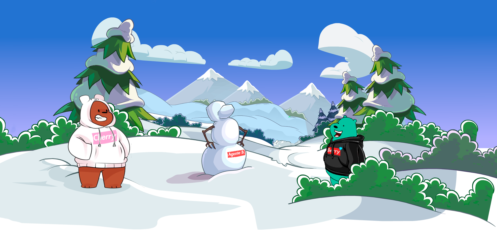
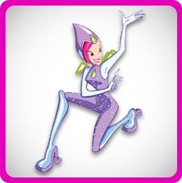

*ANÚNCIOS*

😁 Jogar
🚫 Regras
🥇 Rankings
📩 Fórum
🔧 Definições
Sair
Jogo
O teu browser não suporta o áudio do HTML5. Em vez disso entra por
este link para o áudio
*Está pagina apenas existe para demonstrar os conteúdos que vão ser inseridos no jogo*
Personagens
Cores das Cartas
Mapa de Níveis
Tabuleiros
Temas das Cartas
Baralho Azul - Doraemon
Baralho Castanho - Tom and Jerry
Baralho Cor de Laranja - Garfield
Baralho Cor de Rosa - Winx

Baralho Verde - Tartarugas Ninja
Baralho Vermelho - Phineas and Ferb
Baralho Preto - Spongebob
Vídeo de Apresentação aos Temas e Fundos
O teu browser não suporta o vídeo.